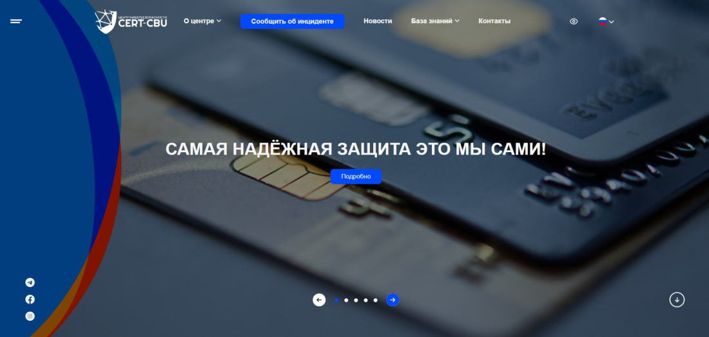

Договорные условия банковского обслуживания

В целях оповещения о киберугрозах и инцидентах кибербезопасности, выявленных в деятельности важных объектов информационной инфраструктуры операторов платежных систем, кредитных и платежных организаций и их предотвращения, Центральным банком запущена “Информационная система оперативного оповещения, направленная на предупреждение инцидентов кибербезопасности в банковской сфере».
Сайт центра кибербезопасности Центрального банка «CERT-CBU» cert.cbu.uz состоит из следующих разделов:
- Сообщить об инциденте – оповещение в Центр кибербезопасности ЦБ «CERT-CBU» об инцидентах кибербезопасности, наблюдаемых в банковской сфере;
- Новости — статьи о важных новостях в сфере кибербезопасности, информация о наблюдаемых в мире инцидентах кибербезопасности;
- База знаний - словарь, содержащий термины, относящиеся к области кибербезопасности, полезная информация по обеспечению кибербезопасности, проверка фальшивых ссылок, создаваемых с наименованием и торговой маркой операторов платежных систем, кредитных и платежных организаций в Республике Узбекистан.
Сайт cert.cbu.uz запущен в тестовом режиме и в дальнейшем будет пополнен новыми функциями и полезной информацией.